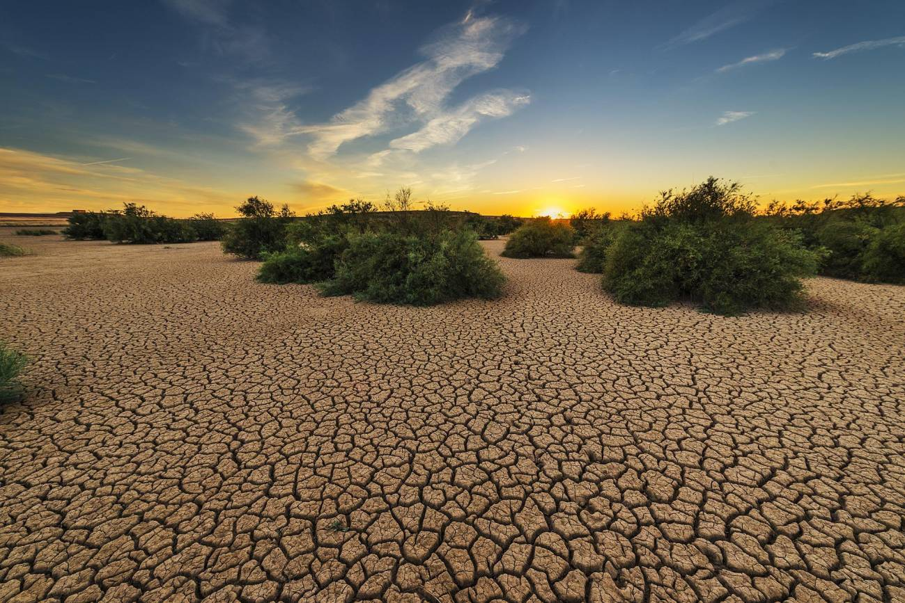
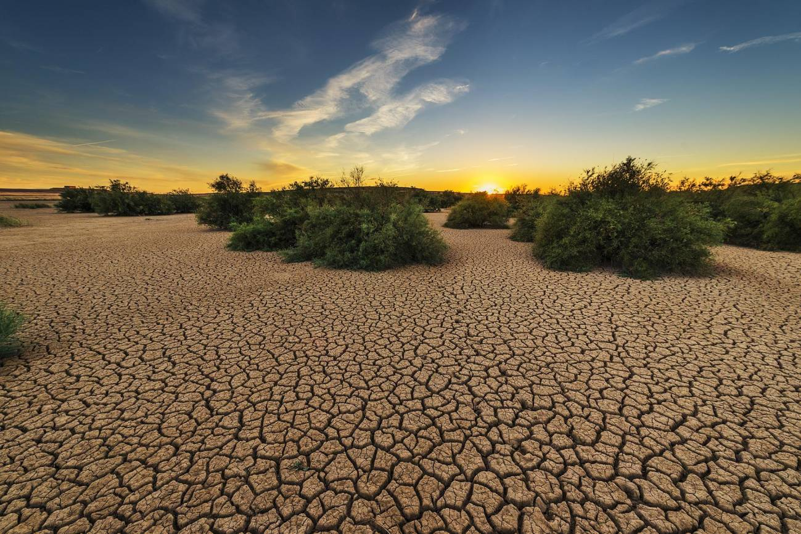

Impacto ambiental: Aumento de temperaturas, incendios, sequías y pérdida de biodiversidad.
Impacto humano: Problemas de salud, pérdidas agrícolas e infraestructuras dañadas.
Medidas: Energías renovables, transporte sostenible y acuerdos internacionales.
 
